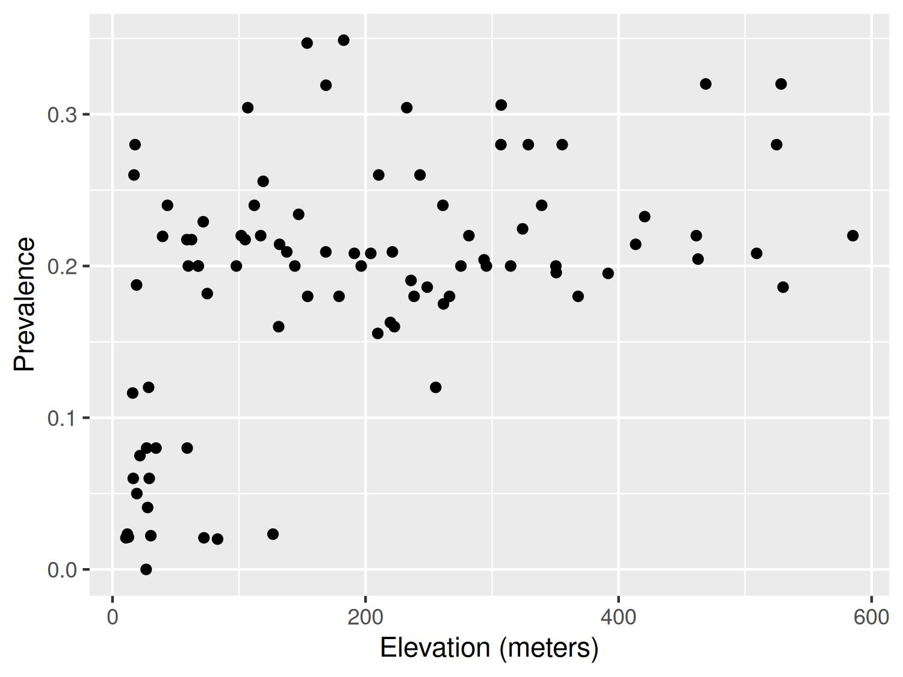
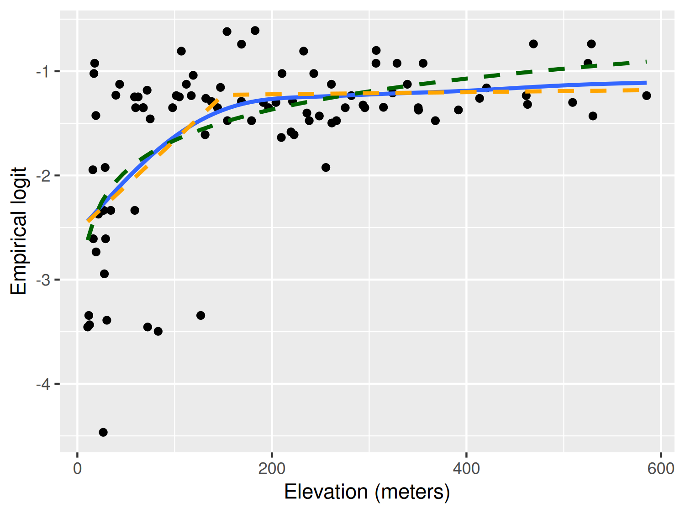
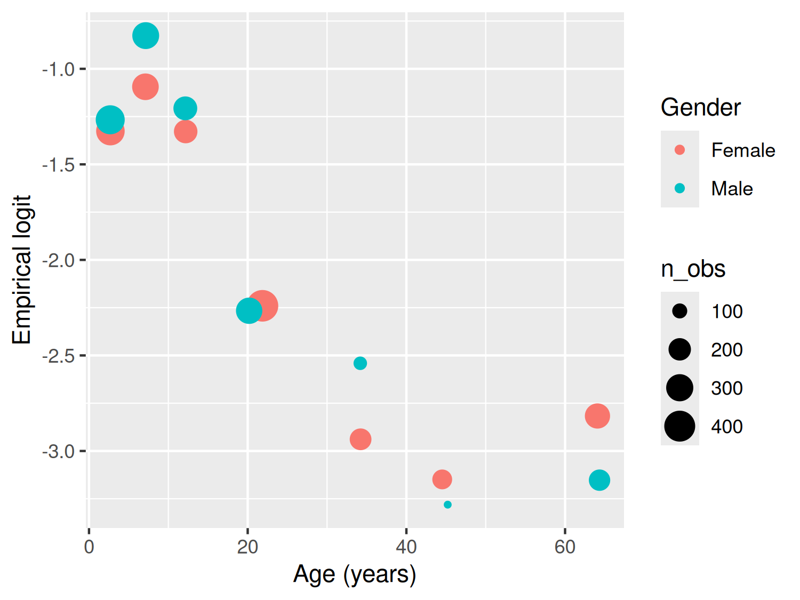
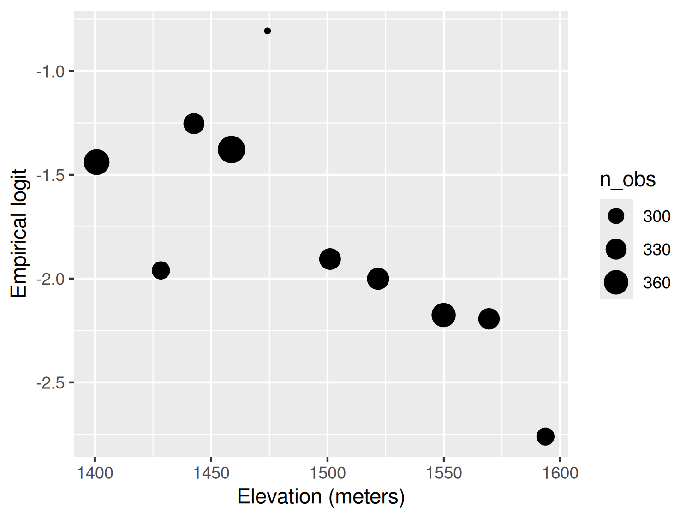
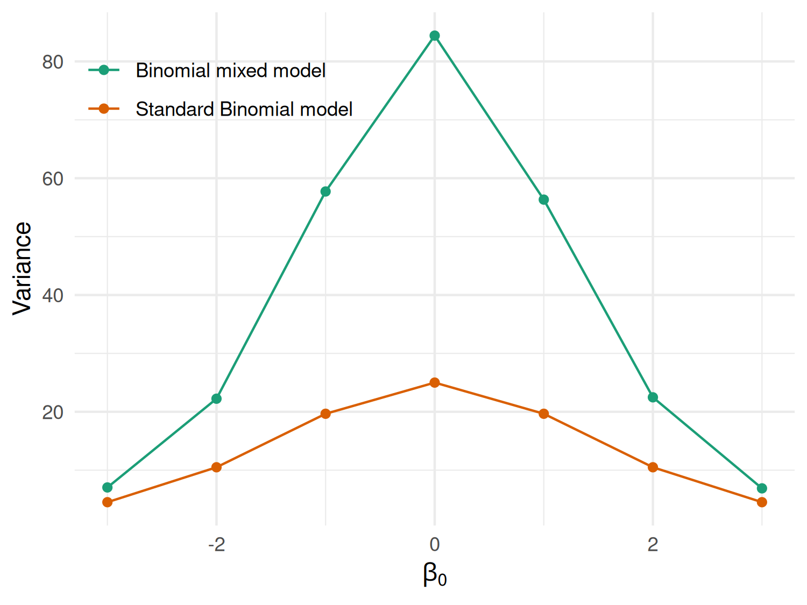

# Compute prevalence
liberia$prev <- liberia$npos / liberia$ntest
# Scatterplot of prevalence vs. elevation
ggplot(liberia, aes(x = elevation, y = prev)) +
geom_point() +
labs(x = "Elevation (meters)", y = "Prevalence")
| Function | R Package | Used for |
|---|---|---|
lmer() |
lme4 | Fitting linear mixed models |
glmer() |
lme4 | Fitting generalized linear mixed models |
glgpm() |
RiskMap | Fitting generalized linear geostatistical models |
variogram() |
RiskMap | Computing the empirical variogram and carrying out permutation test for spatial independence |
This chapter introduces the process of moving from exploratory analysis to the formal specification of statistical models, through to parameter estimation and interpretation of results. We first outline the main steps involved, highlight the role of covariates, and present simple approaches for exploring and modelling non-linear relationships. We then turn to the assessment of residual spatial correlation, which motivates the use of geostatistical models, and describe how maximum likelihood methods can be applied for their estimation.
As illustrated in Figure 1.8, exploratory analysis is the first step in any statistical analysis. This stage is crucial for guiding how covariates should be incorporated into the model and for assessing whether the remaining unexplained variation exhibits spatial correlation. In the case of count data, this stage also involves examining the presence of overdispersion, a phenomenon that often arises when important covariates are omitted or when there is unaccounted heterogeneity in the data. In the following sections, we explain what overdispersion is in more detail and why checking for its presence is an essential prerequisite before fitting geostatistical models to count data.
Assessment of the association between the health outcome of interest and non-categorical (i.e. continuous) risk factors can be carried out using graphical tools, such as scatter plots. The graphical inspection of the empirical association between the outcome and the covariates is especially useful to identify non-linear patterns in the relationship which should then be accounted for in the model formulation.
In this section, we focus on the case where the observed outcome is a count, which requires a different treatment from continuously measured outcomes. The latter have been extensively discussed in the statistical literature and are covered in most standard textbooks (see, for example, Chapter 1 of Weisberg (2014)).
Let us first consider the example of the river-blindness data in Liberia (Section 1.4.2), and examine the association between prevalence and elevation. We first generate a plot of the prevalence against the measured elevation at each of the sample locations
# Compute prevalence
liberia$prev <- liberia$npos / liberia$ntest
# Scatterplot of prevalence vs. elevation
ggplot(liberia, aes(x = elevation, y = prev)) +
geom_point() +
labs(x = "Elevation (meters)", y = "Prevalence")
The plot shown in Figure 3.1 shows that, as elevation increases from 0 to around 150 meters, prevalence rapidly increases to around 0.25 and, for larger values in elevation than 150 meters, the relationship levels off. How can we account for this in a regression model? To answer this question rigorously, the plot in Figure 3.1 cannot be used. This is because, when the modelled outcome is a bounded Binomial count, regression relationships are usually specified on the logit-transformed prevalence (log-odds) scale; see Table 1.3 in Section Section 1.5. To explore regression relationships in the case of prevalence data, it is convenient to use the so-called empirical logit in place of the empirical prevalence. The empirical logit is defined as
\[ l_{i} = \log\left\{\frac{y_i + 1/2}{n_i - y_i + 1/2}\right\} \tag{3.1}\]
where \(y_i\) denotes the number of individuals who tested positive for river-blindness and \(n_i\) is the total number of people tested at location \(i\). Rather than applying the standard logit transformation to the empirical prevalence, we use the empirical logit transformation, implemented via the elogit() function in the RiskMap package. This transformation introduces a small adjustment to both the numerator and denominator, ensuring that the transformed values remain finite even when the observed prevalence is exactly 0 or 1, for which the standard logit is undefined.
# Empirical logit transformation
liberia$elogit <- elogit(y = liberia$npos, m = liberia$ntest)
# Scatterplot of elogit vs. elevation with different potential models
ggplot(liberia, aes(x = elevation, y = elogit)) +
geom_point() +
# Adding a smoothing spline
geom_smooth(method = "gam", formula = y ~ s(x), se = FALSE) +
# Adding linear regression fit with log-transformed elevation
geom_smooth(method = "lm", formula = y ~ log(x),
col = "darkgreen", lty = "dashed", se = FALSE) +
# Adding linear regression fit with change point in 150 meters
geom_smooth(method = "lm", formula = y ~ x + pmax(x - 150, 0),
col = "orange", lty = "dashed", se = FALSE) +
labs(x = "Elevation (meters)", y = "Empirical logit") 
Figure 3.2 shows the scatter plot of the empirical logit against elevation. In this plot, we have also added three curves through the geom_smooth() function from the ggplot2 package. Using this function, we first specify method = "gam" to add a penalized smoothing spline (Wood 2017), represented by the blue solid line. The smoothing spline allows us to better discern the type of relationship and how to best capture it using a standard regression approach. As we can see from Figure 3.2, the smoothing spline corroborates our initial observation of a positive relationship up to about 150 meters, followed by a plateau.
To capture this non-linear relationship, we can use the two following approaches. The first is based on a simple log-transformation of elevation and is represented in Figure 3.2 by the green line. If we express this relationship using a standard Binomial regression model, this would take the form \[ \log\left\{\frac{p(x_i)}{1-p(x_i)}\right\} = \beta_0 + \beta_1 \log\{d(x_i)\} \tag{3.2}\] where \(p(x_i)\) denote the the probability of river-blindness infection at sampled location \(x_i\), and \(d(x_i)\) is the elevation at that location.
Alternatively, the non-linear effect of elevation on prevalence could be captured using a linear spline. Put in simple terms, we want to fit a linear regression model that allows for a change in slope above 150 meters. Formally, this is expressed in a Binomial regression model as \[
\log\left\{\frac{p(x_i)}{1-p(x_i)}\right\} = \beta_0 + \beta_1 d(x_i) + \beta_{2} \max\{d(x_i)-150, 0\}.
\tag{3.3}\] Based on the equation above, the effect of elevation below 150 meters is quantified by the parameter \(\beta_1\). Above 150 meters, instead, the effect of elevation becomes \(\beta_1 + \beta_2\). Note that the function pmax() (and not the standard base function max()) should be used in R when the computation of the maximum between a scalar value and each of the components of a numeric vector is required.
Before proceeding further, it is important to explain the differences between the use of the logarithmic transformation (Equation 3.2) and the linear spline (Equation 3.3). We observe that both curves provide a similar fit to the data, with larger differences observed for larger values in elevation, where the log-transformed elevation models yield larger values for the predicted prevalence. This also suggests that if we were to extrapolate the predictions beyond 600 meters in elevation the implied pattern by the model with the log-transformed elevation would predict an increasingly larger elevation, which is unrealistic, since the fly that transmits the disease cannot breed at those altitudes. The linear spline model instead would generate predictions that would be very similar to those observed between 150 and 600 meters. From this point of view, the linear spline model would thus have more scientific validity than the other model. However, which of the two approaches should be chosen to model the effect of elevation is a question that closely depends on the research question to be addressed.
If the interest of the study was in better understanding the association between elevation and prevalence, the linear spline model does not only provide a more credible explanation but also its regression parameters can be more easily interpreted. In fact, for a unit increase in elevation, the multiplicative change in the odds for river-blindness is \(\exp\{\beta_1\}\), if elevation is below 150 meters, and \(\exp\{\beta_1+\beta_2\}\), if elevation is above 150 meters. When instead we use the log-transformed elevation, the interpretation of \(\beta_1\) in Equation 3.2 is more complicated, as it is based on the multiplicative increase in elevation by the same amount given by the base of the algorithm, which is about \(e \approx 2.718\). To avoid this, one could rescale the regression coefficient as, for example, \(\beta_1/\log_{2}(e)\) which would be interpreted as the multiplicative change in the odds for river-blindness for a doubling in elevation. However, a doubling in elevation is less meaningful when considering larger values of elevation.
The letter \(e\) stands for the so-called Euler’s number and represents the base of the natural logarithm. In the book, we write \(\log(\cdot)\) to mean the “natural logarithm of \(\cdot\)”.
When the goal of statistical analysis is instead in developing a predictive model for the outcome of interest, the explanatory power and interpretability of the model may be of less concern. For this reason, the model with the log-transformed elevation could be preferred over the model with the linear spline, if it is shown to yield more predictive power. We will come back to this point again in Chapter 4, where we will show how to assess and compare the predictive performance of different geostatistical models.
The other type of aggregated count data that we consider are unbounded counts. The Anopheles mosquitoes dataset (Section 1.4.4) is an example of this, since there is no upper limit to the number of mosquitoes that can be trapped at a location. Let us consider the covariate represented by elevation. In this case, the simplest model that can be used to analyse the data is a Poisson regression, where the linear predictor is defined as the log of the mean number of mosquitoes (Table 1.3). Hence, exploratory plots for the association with covariates should be generated using the log transformed counts of mosquitoes. In this instance, to avoid taking the log of zero, we can add 1 to the reported counts, if required. The variable An.gambiae in the anopheles dataset does not contain any 0, hence we simply apply the log transformation without adding 1.
# Apply log-transformation to Anopheles gambiaes counts
anopheles$log_counts <- log(anopheles$An.gambiae)
# Scatterplot of log counts vs. elevation
ggplot(anopheles, aes(x = elevation, y = log_counts)) +
geom_point() +
geom_smooth(method = "lm", formula = y ~ x, se = FALSE) +
labs(x = "Elevation (meters)", y = "Log number of An. gambiae mosquitoes") 
The scatter plot in Figure 3.3 shows a weak negative association, with the average number of mosquitoes tending to decrease as elevation increases. In this case, assuming a linear effect of elevation on the log of the expected mosquito count appears reasonable.
We now consider the malaria data from Kenya (Section 1.4.3) where the main outcome is the result from a rapid diagnostic test (RDT) for malaria from individuals within households. In this case, because the outcome only takes two values, 1 for a positive RDT test result and 0 otherwise, the direct application of the empirical logit from Equation 3.1 would not help us to generate informative scatter plots. Throughout the book, we will consider the data from the community survey only, hence we work with a subset of the data which we shall name malkenya_comm
# Subset to community surveys only
malkenya_comm <- malkenya[malkenya$Survey == "community", ]To show how this issue can be overcome, let us consider the variables age and gender. To generate a plot that can help us understand between the relationship with malaria prevalence and the two risk factors, we proceed as follows.
Using the cut() function, we first split age (in years) into classes through the argument breaks. The classification of age into \([0,5]\), \((5, 10]\) and \((10, 15]\) is common in many malaria epidemiology studies. For older ages, there is no strong requirement for a particular classification, and alternative groupings are equally plausible; the categories used here are intended purely for illustration.
We then compute the empirical logit, using the total number of cases within each combination of age class and gender. For a given age group and gender, which we denote as \(\mathcal{C}\), the empirical logit in Equation 3.1, now takes the form \[
l_{\mathcal{C}} = \log\left\{\frac{\sum_{i \in \mathcal{C}} y_{i} + 0.5}{|\mathcal{C}|- \sum_{i \in \mathcal{C}} y_{i} + 0.5} \right\}
\tag{3.4}\] where \(y_i\) are the individual binary outcomes and \(i\in \mathcal{C}\) is used to indicate that the sum is carried out over all the individuals who belong the class \(\mathcal{C}\), identified by a specific age group and gender. Finally, \(|\mathcal{C}|\) is the number of individuals who fall within \(\mathcal{C}\). In the code above, the empirical logit in Equation 3.4 is computed using the aggregate() function. An inspection of the object age_class_data, a data frame, shows that the empirical logit is found in the column named RDT.
# Computation of the average age by age class and gender
age_class_data$age_mean_point <- aggregate(Age ~ Age_class + Gender,
data = malkenya_comm,
FUN = mean)$Age
# Number of individuals by age class and gender
age_class_data$n_obs <- aggregate(Age ~ Age_class + Gender,
data = malkenya_comm,
FUN = length)$AgeIn order to generate the scatter-plot, we compute the average age within each age group by gender, and use these as our values for the x-axis. Note that since we only need to obtain the average age from this output, we use $Age to extract this only and allocate to the column age_mean_point. Finally, we also compute the number of observations within each of the groups and place this in n_obs.
# Scatterplot of empirical logit RDT vs. age
ggplot(age_class_data, aes(x = age_mean_point, y = RDT)) +
geom_point(aes(size = n_obs, colour = Gender)) +
labs(x = "Age (years)", y = "Empirical logit") 
The resulting plot in Figure 3.4 shows the empirical logit against age by gender, with the size of each of the points proportional to the number of observations falling within each class. The observed patterns are explained by the fact that young children, especially those under the age of five, are particularly vulnerable to severe malaria infections. This is primarily due to their immature immune systems and lack of acquired immunity. As individuals grow older, they generally develop partial immunity to malaria through repeated exposure to the disease. This acquired immunity can provide some level of protection against severe malaria. At the same time, gender roles and activities can influence exposure to malaria-carrying mosquitoes. For example, men may spend more time outdoors for work or other activities, increasing their exposure to mosquito bites and thus their risk of infection. In addition, there are also biological factors to consider. Hormonal and genetic differences between males and females may also contribute to variations in immune responses to malaria infection. The interaction between age and gender is complex and may vary depending on the specific context and population being studied. A 2020 report from the Bill & Melinda Gates foundation provides a detailed overview of this and other aspects related to gender and malaria (Katz and Bill & Melinda Gates Foundation 2020).
To account for age in a model for malaria prevalence, several approaches are possible, some of which have been developed using biological models (Smith et al. 2007). To model the patterns observed in Figure 3.4, we can follow the same approach used in the previous section to model the relationship between elevation and river-blindness prevalence. First, let us consider age without the effect of gender. Let \(p_{j}(x_i)\) denote the probability of a positive RDT for the \(j\)-th individual living in a household at location \(x_i\). Assuming that malaria risk increases during childhood, reaches a peak around 15 years of age, and then changes more gradually in adulthood, we can capture this non-linear relationship using a linear spline with two knots, at 15 and 40 years. This allows the effect of age to vary across three intervals: childhood, early adulthood, and later adulthood. This model can be expressed as \[ \begin{aligned} \log\left\{\frac{p_{j}(x_i)}{1-p_j(x_i)}\right\} = \beta_{0} + \beta_{1}a_{ij}+\beta_{2} \times\max\{a_{ij}-15, 0\} + \beta_{3}\max\{a_{ij}-40, 0\} \end{aligned} \tag{3.5}\] where \(a_{ij}\) is the age, in years, of the \(j\)-th individual at household \(i\). This formulation defines a piecewise linear relationship between age and the log-odds of infection. In particular, the effect of age is \(\beta_{1}\), for \(a_{ij} < 15\), \(\beta_{1}+\beta_{2}\), for \(15 < a_{ij} < 40\), and \(\beta_{1}+\beta_{2}+\beta_{3}\) for \(a_{ij} > 40\).
Figure 3.4 suggests a potential interaction between age and gender, as the difference in RDT prevalence between males and females appears to vary with age, with wider gaps observed among individuals older than 20 years. To examine this pattern using a standard Binomial regression model, the linear predictor for RDT prevalence can be expressed as \[ \begin{aligned} \log\left\{\frac{p_{j}(x_i)}{1-p_j(x_i)}\right\} = \beta_{0} + (\beta_{1} + \beta_{1}^*g_{ij})\times a_{ij}+(\beta_{2} + \beta_{2}^*g_{ij})\times\max\{a_{ij}-15, 0\} + \\ (\beta_{3} + \beta_{3}^*g_{ij}) \times \max\{a_{ij}-40, 0\} \end{aligned} \tag{3.6}\] where \(g_{ij}\) is the indicator for gender, with 1 corresponding to male and 0 to female. The coefficients \(\beta_{1}^*\), \(\beta_{2}^*\) and \(\beta_{3}^*\) thus quantify the differences in risk between the two genders for ages below 15 years, between 15 and 40 years, and above 40 years, respectively. If all of those coefficients were 0, the model in Equation 3.5 would be recovered.
The code above shows how to fit the model specified in Equation 3.6. The terms Age, pmax(Age-15, 0) and pmax(Age-40, 0) respectively correspond to \(\beta_{1}\), \(\beta_{2}\) and \(\beta_{3}\), whilst the Gender:Age, Gender:pmax(Age-15, 0) and Gender:pmax(Age-40, 0) to \(\beta_{1}^*\), \(\beta_{2}^*\) and \(\beta_{3}^*\), respectively.
| Parameter | Term | Estimate | Std. error | z value | p-value |
|---|---|---|---|---|---|
| \(\beta_0\) | Intercept | -1.058 | 0.102 | -10.331 | 0.000 |
| \(\beta_1\) | Age | -0.034 | 0.013 | -2.584 | 0.010 |
| \(\beta_2\) | Age above 15 years | -0.040 | 0.024 | -1.687 | 0.092 |
| \(\beta_3\) | Age above 40 years | 0.092 | 0.025 | 3.695 | 0.000 |
| \(\beta_1^*\) | Male × age | 0.014 | 0.012 | 1.170 | 0.242 |
| \(\beta_2^*\) | Male × age above 15 years | -0.036 | 0.031 | -1.153 | 0.249 |
| \(\beta_3^*\) | Male × age above 40 years | 0.025 | 0.043 | 0.567 | 0.571 |
The estimated coefficients are reported in Table 3.1. The three interaction coefficients are not individually statistically significant at the 5% level. However, removing the interaction on the basis of these individual p-values would be inappropriate, because the interaction is represented by three coefficients. Instead, the model with and without the interaction terms should be compared using a likelihood ratio test, as shown below.
| Model | Residual df | Residual deviance | Difference in deviance | p-value |
|---|---|---|---|---|
| Reduced model (no interaction) | 3348 | 2675.62 | ||
| Full model (age × sex interaction) | 3345 | 2673.82 | 1.81 | 0.61 |
To assess the null hypothesis that \(\beta_{1}^*=\beta_{2}^*=\beta_{3}^*=0\), we compare the model with and without the age-by-sex interaction terms. This is done by fitting the reduced model under the null hypothesis and performing a likelihood ratio test using the anova() function. The results are reported in Table 3.2. The p-value indicates that we do not find evidence against the null hypothesis, hence in our analysis of the data we might favour the simplified model that does not assume an interaction between the two genders. However, it is important to note that the likelihood used here comes from a standard Binomial model that does not account for residual spatial correlation. As will be shown later in the book, ignoring such correlation typically leads to underestimated standard errors for the regression coefficients and, consequently, p-values that are smaller than they should be. The resulting p-values from the likelihood ratio test may therefore be unreliable. Nonetheless, these exploratory analyses remain useful for identifying patterns that may or may not persist once a more flexible model is fitted. In practice, if an interaction appears weak or non-significant at this stage, one would expect even less evidence for it under a model that captures additional variability. Conversely, when certain relationships are scientifically plausible - such as age-specific differences between genders - it may still be appropriate to retain them regardless of their statistical significance.
The approach just illustrated, can also be applied to explore the association with other continuous variables that are a property of the household and not of the individual. Let us, for example, consider the variable elevation from the malkenya data-set.
Following the same approach used for age, we first split elevation into classes. To define these, we use the deciles of the empirical distribution of elevation which we calculate using the quantile() function above. In this way we also ensure that the number of observations falling within each class of elevation is approximately the same.
# Computation of the empirical logit by classes of elevation
elev_class_data <- aggregate(RDT ~ elevation_class,
data = malkenya_comm,
FUN = function(y) elogit(sum(y), length(y)))
# Computation of the average elevation within each class of elevation
elev_class_data$elevation_mean <- aggregate(elevation ~ elevation_class,
data = malkenya_comm,
FUN = mean)$elevation
# Computation of the number of observations within each class of elevation
elev_class_data$n_obs <- aggregate(elevation ~ elevation_class,
data = malkenya_comm,
FUN = length)$elevationWe then compute the empirical logit, the average elevation and total number of observations for each class of elevation. The empirical logit is computed as already defined in Equation 3.4, where now the definition of \(\mathcal{C}\) is given by a specific decile used to split the distribution of elevation.
# Scatterplot of the empirical logit of RDT vs. mean elevation
ggplot(elev_class_data, aes(x = elevation_mean, y = RDT)) +
geom_point(aes(size = n_obs)) +
labs(x = "Elevation (meters)", y = "Empirical logit") 
The resulting plot in Figure 3.5 shows an approximately linear relationship with decreasing values of the empirical logit for increasing elevation. This is expected because the cooler environment at higher altitudes is less favourable to the development of the overall mosquito life cycle.
An alternative approach to generate a scatter plot for assessing the association between elevation and the empirical logit would be to aggregate the data at household level, rather than using classes of elevation. However, this approach cannot be applied when only one individual is sampled for each household. In the case of the malkenya data, the great majority of the households only include one individual making this second approach less useful than the one illustrated.
Other more sophisticated approaches for the exploration of the associations between covariates and binary outcomes are available. For example, the use of the empirical logit could be avoided by using non-parametric regression methods for Binomial outcomes (Bowman 1997), also implemented in the sm package in R. Our view is that a careful exploratory analysis based on simpler methods, such as those illustrated above, can be equally effective to inform the model formulation.
One of the main advantages in the use of covariates is the ability to attribute part of the variation in the outcome to a set of measured variables and, hence, reduce the uncertainty of our inferences. However, it is almost always the case that the finite number of covariates at our disposal is not enough to fully explain the variation in the outcome. The existence of unmeasured covariates that are related to the modelled outcome gives rise to the so-called residual variation. In a standard linear regression model the extent to which we are able to account for important covariates is directly linked to the size of the variance of the residuals. In the case of count data, instead, this link is less well defined and one of the main consequences of the omission of covariates, which we address in this chapter, is overdispersion.
Overdispersion occurs when the variability of the data is larger than that implied by the generalized linear model (GLM) fitted to them. For example, if we consider the Binomial distribution, the presence of overdispersion implies that \(V(Y_i) > m_i \mu_{i}(1-\mu_i)\), where we recall that \(m_i\) is the Binomial denominator and \(\mu_i\) is the probability of “success” for each of the \(m_i\) Bernoulli trials; for a Poisson distribution with \(E(Y_i) = \mu_i\), instead, overdispersion implies that \(V(Y_i) > \mu_{i}\).
Assessment of the overdispersion for count data can be carried out in different ways depending on the goal of the statistical analysis. Since the focus of this book is to illustrate how to formulate and apply geostatistical models, the most natural approach to assess overdispersion is through the use of generalized linear mixed models (GLMMs). The class of GLMMs that we consider in this and the next section are obtained by replacing the spatial Gaussian process \(S(x_i)\) in introduced in Equation 1.4 with a set of mutually independent random effects, which we denote as \(Z_i\), and thus write \[ g(\mu_i) = d(x_i)^\top \beta + Z_i. \tag{3.7}\] The model above accounts for the overdispersion in the data through \(Z_i\) whose variance can be interpreted as an indicator of the amount of overdispersion. To show this, we carry out a small simulation as follows. For simplicity, we consider the Binomial mixed model with an intercept only, hence \[ \log\left\{\frac{\mu_i}{1-\mu_i}\right\} = \beta_0 + Z_i \tag{3.8}\] and assume that the \(Z_i\) follow a set of mutually independent Gaussian variables with mean 0 and variance \(\tau^2\). In our simulation we vary \(\beta_0\) over the set \(\{-3, -2, -1, 0, 1, 2, 3\}\) and set \(\tau^2=0.1\) and the binomial denominators to \(n_i = 100\). For a given value of \(\beta_0\), we then proceed through the following iterative steps.
Simulate 10,000 values for \(Z_i\) from a Gaussian distribution with mean 0 and variance \(\tau^2\).
Compute the probabilities \(\mu_i\) based on Equation 3.8.
Simulate 10,000 values from a Binomial model with probability of success \(\mu_i\) and denominator \(n_i\).
Compute the empirical variance of the counts \(y_i\) simulated in the previous step.
Change the value of \(\beta_0\) and repeat the previous steps, for all the values of \(\beta_0\).
The code below shows the implementation of the above steps in R.
# Number of simulations
n_sim <- 10000
# Variance of the Z_i
tau2 <- 0.1
# Binomial denominator
bin_denom <- 100
# Intercept values
beta0 <- c(-3, -2, -1, 0, 1, 2, 3)
# Vector where we store the computed variance from
# the simulated counts from the Binomial mixed model
var_data <- rep(NA, length(beta0))
for(j in 1:length(beta0)) {
# Simulation of the random effects Z_i
Z_i_sim <- rnorm(n_sim, sd = sqrt(tau2))
# Linear predictor of the Binomial mixed model
lp <- beta0[j] + Z_i_sim
# Probabilities of the Binomial distribution conditional on Z_i
prob_sim <- exp(lp) / (1 + exp(lp))
# Simulation of the counts from the Binomial mixed model
y_i_sim <- rbinom(n_sim, size = bin_denom, prob = prob_sim)
# Empirical variance from the simulated counts
var_data[j] <- var(y_i_sim)
}
# Probabilities from the standard Binomial model (Z_i = 0)
probs_binomial <- exp(beta0) / (1 + exp(beta0))
# Variance from the standard Binomial model
var_binomial <- bin_denom * probs_binomial * (1 - probs_binomial)# Create a data.frame for plotting the results
plot_df <- data.frame(beta0 = beta0,
Binomial.mixed.model = var_data,
Standard.Binomial.model = var_binomial) |>
pivot_longer(cols = c(Binomial.mixed.model, Standard.Binomial.model),
names_to = "Model",
values_to = "Variance") |>
mutate(Model = factor(Model,
levels = c("Binomial.mixed.model",
"Standard.Binomial.model"),
labels = c("Binomial mixed model",
"Standard Binomial model")))
ggplot(plot_df, aes(x = beta0, y = Variance, color = Model)) +
geom_point() +
geom_line() +
labs(x = expression(beta[0]), y = "Variance") +
scale_color_brewer(type = "q", palette = 2) +
theme_minimal() +
theme(legend.title = element_blank(), legend.position = c(0.2, 0.85))
Figure 3.6 shows the results of the simulation. In this figure, the orange line corresponds to the variance of a standard Binomial model, obtained by setting \(Z_i=0\) and computed as \(n_i \mu_i (1-\mu_i)\) with \(\mu_i = \exp\{\beta_0\}/(1+\exp\{\beta_0\})\). As expected, this plot shows that the variance of the simulated counts from the mixed model in Equation 3.8 exhibit a larger variance than would be expected under the standard Binomial model. It also indicates that the chosen value for the variance of \(Z_i\) of \(\tau^2 = 0.1\) corresponds to a significant amount of dispersion. One way to relate \(\tau^2\) to the amount of overdispersion is by considering that, following from the properties of a univariate Gaussian distribution, a priori the \(Z_i\) will take values between \(-1.96 \sqrt{\tau^2}\) and \(+1.96 \sqrt{\tau^2}\) with approximately 95\(\%\) probability. That implies that \(\exp\{Z_i\}\), which expresses the effect of the random effects on the odds ratios, will be with 95\(\%\) probability between \(\exp\{-1.96 \sqrt{\tau^2}\}\) and \(\exp\{+1.96 \sqrt{\tau^2}\}\). By replacing \(\tau^2\) with the chosen values for the simulation, those two become about 0.54 and 1.86, meaning that with the \(Z_i\) with \(95\%\) probability will have a multiplicative effect on the odds ratios between \(0.54\) and \(1.86\).
To consolidate the concepts introduced so far, we encourage you to complete Exercises 1 and 2 at the end of this chapter, which further explore the use of generalized linear mixed models as a tool for accounting for overdispersion.
We now illustrate how to fit a generalized linear mixed, using the anopheles dataset as an example. We consider two models: an intercept-only model and one that uses elevation as a covariate. Let \(\mu(x_i)\) be the number of mosquitoes captured at a location \(x_i\); then the linear predictor with elevation as a covariate takes the form \[
\log\{\mu_i\} = \beta_{0} + \beta_{1} d(x_i) + Z_i
\tag{3.9}\] where \(d(x_i)\) indicates the elevation in meters at location \(x_i\) and the \(Z_i\) are independent and identically distributed Gaussian variables with mean 0 and variance \(\tau^2\). The model with an intercept only is simply obtained by setting \(\beta_1 = 0\).
We carry out the estimation in R using the glmer() function from the lme4 package (see Bates et al. (2015) for a detailed tutorial). The glmer() function implements the maximum likelihood estimation for generalized linear mixed models. The code below shows how glmer() is used to carry out this step for the model in Equation 3.9 and the one without covariates.
# Create an ID for the location
anopheles$ID_loc <- 1:nrow(anopheles)
# Poisson mixed model with elevation
fit_glmer_elev <- glmer(An.gambiae ~ scale(elevation) + (1|ID_loc),
family = poisson, data = anopheles, nAGQ = 25)
# Poisson mixed model with intercept only
fit_glmer_int <- glmer(An.gambiae ~ (1|ID_loc),
family = poisson, data = anopheles, nAGQ = 25)To fit the model with glmer(), we first must create a variable in our dataset that allows us to identify the location associated with each count. In this case, since every row corresponds to a different location, we simply use the row number to identify the locations and save this in a new column called ID_loc. The random effects \(Z_i\) are then included in the model by adding (1 | ID_loc) in the formula of the glmer() function.
When introducing the variable elevation, we standardize it so that its mean is 0 and its variance is 1. This helps the model-fitting algorithm converge more reliably and is generally good practice when covariates are measured on very different scales. Importantly, standardizing a variable does not change the fit of the model to the data, it only changes how we interpret the regression coefficients. In other words, the model is mathematically equivalent; only the units of measurement differ. For example, suppose we model mosquito counts using elevation measured in metres and obtain a regression coefficient of –0.002. Under our log-link model, this implies that a one-metre increase in elevation multiplies the expected mosquito count by \(\exp(-0.002) \approx0.998\), corresponding to an approximate decrease of \(100\%\times{\exp(−0.002)−1}\approx−0.2\%\). If we instead standardize elevation so that one unit represents one standard deviation (say 150 m), the corresponding coefficient becomes –0.002 × 150 = –0.30. Both models yield identical fitted values and predictions. The only difference is that in the standardized model, the coefficient refers to a one-standard-deviation change in elevation rather than a one-metre change. Standardization also changes the interpretation of the intercept. In the unstandardized model, the intercept corresponds to the expected response when elevation is 0 m, whereas in the standardized model it corresponds to the expected response at the mean elevation. Since the latter is often more meaningful, standardization can also improve the interpretability of the intercept.
The argument nAGQ is used to define the precision of the approximation of the maximum likelihood estimation algorithm. By default nAGQ = 1, which corresponds to the Laplace approximation. Values for nAGQ larger than 1 are used to define the number of points of the adaptive Gaussian-Hermite quadrature. The general principle is that the larger nAGQ the better, but at the expense of an increased computing time. Based on the guidelines and help pages of the lme4 package, it is stated that a reasonable value for nAGQ is 25. For more technical details on this aspect, we refer you to Bates et al. (2015).
We can now summarise the fitted models for the mosquito dataset by reporting the quantities that are most relevant for interpretation, rather than printing the full output returned by summary().
| Term | Estimate | Std. error | z value | p-value | Exponentiated estimate | Interpretation |
|---|---|---|---|---|---|---|
| Intercept | 1.530 | 0.094 | 16.342 | 0.000 | 4.62 | Expected mosquito count at mean elevation |
| Elevation (standardised) | -0.198 | 0.089 | -2.212 | 0.027 | 0.82 | Multiplicative change per 1 SD increase |
| Model | AIC | BIC | Log-likelihood | Random-effect variance | Random-effect SD |
|---|---|---|---|---|---|
| Intercept only | 294.599 | 300.106 | -145.300 | 0.761 | 0.872 |
| Elevation | 291.838 | 300.098 | -142.919 | 0.715 | 0.845 |
The estimated fixed effects for the model including elevation are reported in Table 3.3. The estimated regression coefficient associated with elevation, \(\beta_1\), is negative and statistically significant, suggesting that mosquito abundance decreases as elevation increases. Since the model uses a logarithmic link function, exponentiating the coefficient gives the multiplicative effect on the expected mosquito count. In this case, a one-standard-deviation increase in elevation multiplies the expected mosquito count by \(\exp(-0.19794)=0.82\), corresponding to an approximate reduction of \[ 100 \times \{\exp(-0.19794)-1\} \approx -18\%. \]
Because elevation has been standardised, a one-unit increase corresponds to an increase in the original elevation variable equal to its standard deviation, which for the elevation variable is approximately 100 metres.
The exponentiated intercept reported in Table 3.3 also has a useful interpretation. Since elevation has been standardised to have mean 0, the intercept corresponds to the expected mosquito count at the mean elevation, for a location whose random effect is equal to zero.
The comparison between the intercept-only model and the model including elevation is shown in Table 3.4. From this table, we observe that the estimated variance of the random effect, \(\tau^2\), decreases slightly from 0.761 in the intercept-only model to 0.715 in the model including elevation. Recall that \(\tau^2\) represents the variance of the location-specific random effects \(Z_i\). The quantities reported under Random-effect SD are simply the square roots of the corresponding variances.
As expected, including elevation in the model explains a small proportion of the between-location variability captured by the random effects, though a substantial amount of residual variation remains unexplained. The estimated values of \(\tau^2\) therefore suggest the presence of extra-Poisson variation in the mosquito counts that is not accounted for by elevation alone.
In the next section, we will illustrate how to assess the presence of residual correlation for continuous measurements and overdispersed count data.
In its most basic form, the concept of spatial correlation can be succinctly encapsulated by Tobler (1970) first law of geography, which posits that “everything is interconnected, but objects in close proximity exhibit stronger relationships than those situated farther apart.” After we have identified the key variables to introduce as covariates in the model (Section 3.1.1) and, in the case of count data, assessed the presence of overdispersion (Section 3.1.2), our final exploratory step consists of assessing whether the residuals of the non spatial model show evidence of spatial correlation. Hence, in geostatistical modelling, the interest is not in the spatial correlation of the data, but rather in understanding whether the variation in the outcome unexplained by the covariates exhibits spatial correlation. We call this residual spatial correlation, to emphasize that spatial correlation is a concept relative to the covariates that we have introduced in the model.
In the context of geostatistical analysis, the tool that is generally used to assess the residual spatial correlation is the so-called empirical variogram. Before looking at the mathematical definition of the empirical variogram, let us consider a generalized linear mixed model as expressed in Equation 3.7. Our goal is then to question the assumption of independently distributed random effects \(Z_i\) by asking whether the \(Z_i\) show evidence of spatial correlation. Let \(Z_i\) and \(Z_j\) be two random effects that are associated with two different locations \(x_i\) and \(x_j\), respectively, and let us take the squared difference between the two \[V_{ij} = (Z_i - Z_j)^2. \tag{3.10}\] How does the spatial correlation affect the value of \(V_{ij}\)? To answer this question, we can refer to the aforementioned Tobler’s law of geography. When \(x_i\) and \(x_j\) will be closer to each other, then \(Z_i\) and \(Z_j\) will also tend to be more similar to each other, thus making \(V_{ij}\) smaller, on average. On the contrary, when \(x_i\) and \(x_j\) will be further apart, then \(V_{ij}\) will become larger, on average. We can then construct the empirical variogram by considering all possible pairs of locations \(x_i\) and \(x_j\), for which we then compute \(V_{ij}\) and plot this against the distance between \(x_i\) and \(x_j\), which we denote as \(u_{ij}\). If there is spatial correlation in the random effects \(Z_i\), then this will manifest as an average increase in the \(V_{ij}\) as \(u_{ij}\) increases. However, there are still two issues that we have to address before we can generate and plot the empirical variogram.
The first issue is that we do not observe \(Z_i\) as, by definition, this is a latent variable. Hence, we require an estimate for \(Z_i\) which we can then feed into \(V_{ij}\). To emphasize this point, from now on, we shall replace Equation 3.10 with \[\hat{V}{ij} = (\hat{Z}{i} - \hat{Z}_j)^2. \tag{3.11}\] Several options are available for estimating \(Z_{i}\). Our choice is to use the model of the predictive distribution of \(Z_i\), that is the distribution of \(Z_{i}\) conditioned to the data \(y_i\). This estimator for \(Z_i\) is also readily available from the output of the lmer and glmer functions of the lme4 package, as we will illustrate later in our example in this section.
The second issue is that if we simply plot \(\hat{V}_{ij}\) against the distances \(u_{ij}\) (also known as cloud variogram; see Exercise 3 at the bottom of this chapter), due to the high noisiness in the \(\hat{V}_{ij}\), it may be quite difficult to assess the presence of an increasing trend in the \(\hat{V}_{ij}\) and thus detect spatial correlation. Hence, it is general practice to group the distances \(u_{ij}\) into classes, say \(\mathcal{U}\), and then take average of all the \(\hat{V}_{ij}\) that fall within \(\mathcal{U}\). We can now write the formal definition of the empirical variogram as \[\hat{V}(\mathcal{U}) = \frac{1}{2 |\mathcal{U}|} \sum_{(i, j): (u_i, u_j) \in \mathcal{U}} \hat{V}{ij} \tag{3.12}\] where \(|\mathcal{U}|\) denotes the number of pairs of locations that fall within the distance class \(\mathcal{U}\). The rationale behind dividing by 2 in \(1/2 |\mathcal{U}|\) from the above equation, will be elucidated in ?sec-linear-model. When creating the empirical variogram plot, we select the midpoint values of the distance classes \(\mathcal{U}\) to represent the x-axis values.
Before we can evaluate residual spatial correlation, there remains one crucial concern: relying solely on a visual inspection of the empirical variogram is susceptible to human subjectivity. Furthermore, it is worth noting that even a seemingly upward trend observed in the empirical variogram might be merely a product of random fluctuations, rather than a reliable indication of actual residual spatial correlation. To address these concerns and enhance the objectivity of the use of the empirical variogram, one approach would involve comparing the observed empirical variogram pattern with those generated in the absence of spatial correlation. Following this principle, we then use a permutation test that allows us to generate empirical variograms under the assumption of absence of spatial correlation through the following iterative steps.
Permute the order of the locations in the data-set while keeping everything else fixed.
Compute the empirical variogram \(\hat{V}(\mathcal{U})\) for the permuted data-set.
Repeat 1 and 2 a large number of times, say 10,000.
Use the resulting 10,000 empirical variograms to compute 95\(\%\) confidence intervals, by taking the 0.025 and 0.975 quantiles of these for each distance class \(\hat{V}(\mathcal{U})\).
If the observed empirical variogram lies entirely within the envelope generated in the previous step, we conclude that there is no evidence of residual spatial correlation in the data. When, instead, parts of the empirical variogram fall outside the envelope, this suggests the presence of residual spatial dependence.
In point 5 above, the extent and pattern of these deviations can vary considerably. In many cases, the departures from the envelope are quite subtle, with only a few points of the empirical variogram falling outside, as we will see in later examples. Such patterns may indicate weak spatial dependence that is difficult to recover from the data.
Ultimately, only the fit of a geostatistical model can provide a definitive assessment of the extent of the spatial correlation. The empirical variogram should therefore be viewed as a diagnostic tool that helps to explore residual spatial correlation, rather than as conclusive evidence on its own.
We now show an application of all the concepts introduced in this section to the Liberia data on river-blindness.